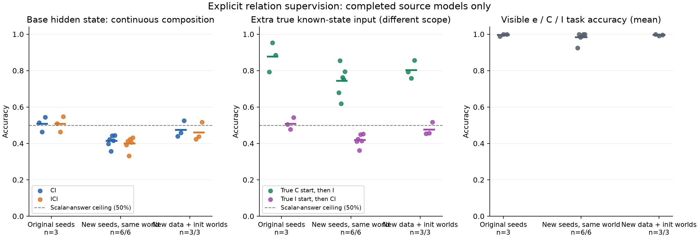
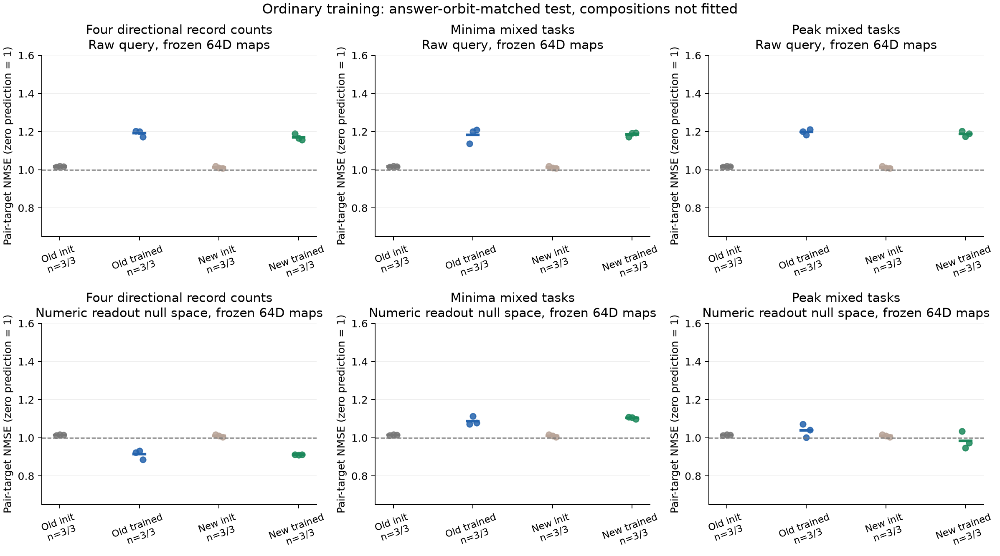
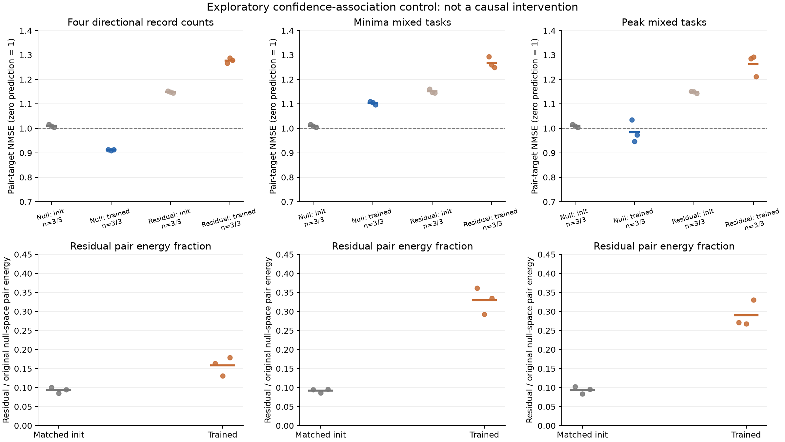
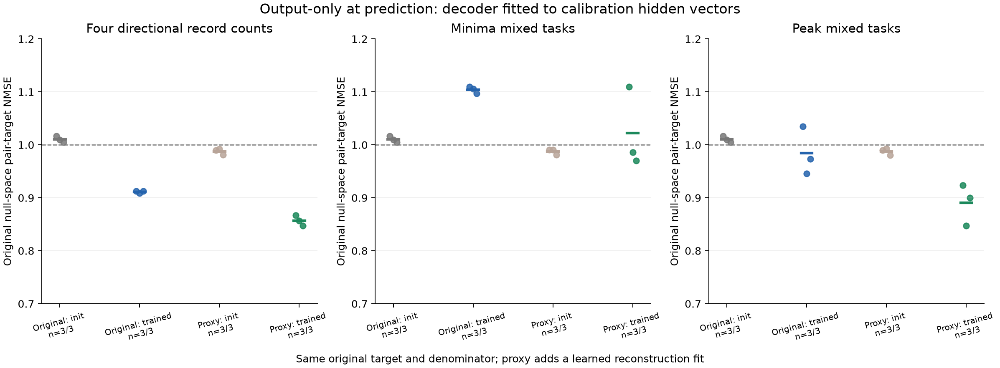

更新于 2026-10-06T17:00:24.923226+00:00。只计入已完成源模型；未完成种子不参与均值。旧主张仍限于关系监督改善留出复合预测，稳定的原始表征连续组合推断需另检验。
普通四记录任务的数字读出零空间几何在三个新种子复现，但进一步回归输出置信度关联后，残差复合误差约1.278，随机为1.148，优势消失。残差只保留原配对变化能量的13%–18%。目前支持可复现的任务输出相关结构，不能排除置信度解释，也不能确认答案与置信度之外的独立代数计算机制。该回归是探索性关联控制，不是因果干预。
新增已完成种子：CI平均 41.3%（0/6 超过50%）；ICI平均 39.9%（0/6 超过50%）。目前不支持稳定超过标量答案上限。正确配对与错误配对的冻结源模型对照另列，不能把对照优势等同于突破该上限。
CI、ICI分开，下面均为同一条件碰撞测试的逐排列准确率。每对三个真实已知答案及长度相同、隐藏答案不同，任意只用这些标量的确定性预测器准确率至多50%。该上限不用于可见生成元成绩或未筛选iid测试。CI与ICI预测同一个缺失属性，不能算作独立重复。各世界使用自己的新碰撞对。
| 队列 | 训练条件 | 算子来源 | 隐藏词 | 源模型数 | 可见e | 可见C | 可见I | 隐藏答案准确率 | 隐藏位移NMSE |
|---|---|---|---|---|---|---|---|---|---|
| 三个新世界 | correct_relations | native_operators | ci | 3 | 0.9881 | 1.0000 | 1.0000 | 0.4740 | 0.2246 |
| 三个新世界 | correct_relations | native_operators | ici | 3 | 0.9881 | 1.0000 | 1.0000 | 0.4593 | 0.2377 |
| 三个新世界 | correct_relations | posthoc_correct_generators | ci | 3 | 0.9881 | 1.0000 | 1.0000 | 0.4463 | 0.2350 |
| 三个新世界 | correct_relations | posthoc_correct_generators | ici | 3 | 0.9881 | 1.0000 | 1.0000 | 0.4401 | 0.2477 |
| 三个新世界 | ordinary | native_operators | ci | 3 | 0.9960 | 1.0000 | 1.0000 | 0.1897 | 1.0000 |
| 三个新世界 | ordinary | native_operators | ici | 3 | 0.9960 | 1.0000 | 1.0000 | 0.1897 | 1.0000 |
| 三个新世界 | ordinary | posthoc_correct_generators | ci | 3 | 0.9960 | 1.0000 | 1.0000 | 0.2654 | 0.5082 |
| 三个新世界 | ordinary | posthoc_correct_generators | ici | 3 | 0.9960 | 1.0000 | 1.0000 | 0.2639 | 0.5026 |
| 三个新世界 | shuffled_relations | native_operators | ci | 3 | 0.9881 | 0.9960 | 0.9960 | 0.2659 | 0.5335 |
| 三个新世界 | shuffled_relations | native_operators | ici | 3 | 0.9881 | 0.9960 | 0.9960 | 0.2661 | 0.5348 |
| 三个新世界 | shuffled_relations | posthoc_correct_generators | ci | 3 | 0.9881 | 0.9960 | 0.9960 | 0.2608 | 0.5410 |
| 三个新世界 | shuffled_relations | posthoc_correct_generators | ici | 3 | 0.9881 | 0.9960 | 0.9960 | 0.2615 | 0.5416 |
| 原三种子 | correct_relations | native_operators | ci | 3 | 0.9960 | 1.0000 | 0.9921 | 0.5071 | 0.2295 |
| 原三种子 | correct_relations | native_operators | ici | 3 | 0.9960 | 1.0000 | 0.9921 | 0.5068 | 0.2368 |
| 原三种子 | correct_relations | posthoc_correct_generators | ci | 3 | 0.9960 | 1.0000 | 0.9921 | 0.4640 | 0.2438 |
| 原三种子 | correct_relations | posthoc_correct_generators | ici | 3 | 0.9960 | 1.0000 | 0.9921 | 0.4665 | 0.2496 |
| 原三种子 | ordinary | native_operators | ci | 3 | 1.0000 | 1.0000 | 1.0000 | 0.2024 | 1.0000 |
| 原三种子 | ordinary | native_operators | ici | 3 | 1.0000 | 1.0000 | 1.0000 | 0.2024 | 1.0000 |
| 原三种子 | ordinary | posthoc_correct_generators | ci | 3 | 1.0000 | 1.0000 | 1.0000 | 0.2494 | 0.5126 |
| 原三种子 | ordinary | posthoc_correct_generators | ici | 3 | 1.0000 | 1.0000 | 1.0000 | 0.2491 | 0.5080 |
| 原三种子 | shuffled_relations | native_operators | ci | 3 | 0.9921 | 1.0000 | 0.9881 | 0.2717 | 0.5331 |
| 原三种子 | shuffled_relations | native_operators | ici | 3 | 0.9921 | 1.0000 | 0.9881 | 0.2712 | 0.5367 |
| 原三种子 | shuffled_relations | posthoc_correct_generators | ci | 3 | 0.9921 | 1.0000 | 0.9881 | 0.2599 | 0.5410 |
| 原三种子 | shuffled_relations | posthoc_correct_generators | ici | 3 | 0.9921 | 1.0000 | 0.9881 | 0.2572 | 0.5439 |
| 新增六种子 | correct_relations | native_operators | ci | 6 | 0.9921 | 0.9881 | 0.9702 | 0.4134 | 0.2781 |
| 新增六种子 | correct_relations | native_operators | ici | 6 | 0.9921 | 0.9881 | 0.9702 | 0.3994 | 0.2967 |
| 新增六种子 | correct_relations | posthoc_correct_generators | ci | 6 | 0.9921 | 0.9881 | 0.9702 | 0.3989 | 0.2860 |
| 新增六种子 | correct_relations | posthoc_correct_generators | ici | 6 | 0.9921 | 0.9881 | 0.9702 | 0.3989 | 0.2986 |
| 新增六种子 | ordinary | native_operators | ci | 6 | 1.0000 | 1.0000 | 0.9980 | 0.2024 | 1.0000 |
| 新增六种子 | ordinary | native_operators | ici | 6 | 1.0000 | 1.0000 | 0.9980 | 0.2024 | 1.0000 |
| 新增六种子 | ordinary | posthoc_correct_generators | ci | 6 | 1.0000 | 1.0000 | 0.9980 | 0.2542 | 0.5129 |
| 新增六种子 | ordinary | posthoc_correct_generators | ici | 6 | 1.0000 | 1.0000 | 0.9980 | 0.2556 | 0.5084 |
| 新增六种子 | shuffled_relations | native_operators | ci | 6 | 0.9940 | 0.9940 | 0.9881 | 0.2720 | 0.5328 |
| 新增六种子 | shuffled_relations | native_operators | ici | 6 | 0.9940 | 0.9940 | 0.9881 | 0.2722 | 0.5356 |
| 新增六种子 | shuffled_relations | posthoc_correct_generators | ci | 6 | 0.9940 | 0.9940 | 0.9881 | 0.2589 | 0.5414 |
| 新增六种子 | shuffled_relations | posthoc_correct_generators | ici | 6 | 0.9940 | 0.9940 | 0.9881 | 0.2581 | 0.5426 |
每个源模型权重及数字读出固定。正确与错误配对使用相同已知输入特征、相同拟合量和验证规则；这一比较的可见任务准确率完全相同。每长度256个源锚点；不在隐藏关系上选参数。
| 队列 | 冻结的源模型类型 | 关系配对 | 隐藏词 | 源模型数 | 相同可见准确率 | 隐藏答案准确率 | 隐藏位移NMSE |
|---|---|---|---|---|---|---|---|
| 三个新世界 | correct_relations | correct | ci | 3 | 0.9960 | 0.5104 | 0.2040 |
| 三个新世界 | correct_relations | correct | ici | 3 | 0.9960 | 0.5030 | 0.2188 |
| 三个新世界 | correct_relations | shuffled | ci | 3 | 0.9960 | 0.2670 | 0.4896 |
| 三个新世界 | correct_relations | shuffled | ici | 3 | 0.9960 | 0.2695 | 0.4914 |
| 三个新世界 | ordinary | correct | ci | 3 | 0.9987 | 0.2867 | 0.4915 |
| 三个新世界 | ordinary | correct | ici | 3 | 0.9987 | 0.2783 | 0.4886 |
| 三个新世界 | ordinary | shuffled | ci | 3 | 0.9987 | 0.2747 | 0.4977 |
| 三个新世界 | ordinary | shuffled | ici | 3 | 0.9987 | 0.2749 | 0.4922 |
| 三个新世界 | shuffled_relations | correct | ci | 3 | 0.9934 | 0.2733 | 0.5300 |
| 三个新世界 | shuffled_relations | correct | ici | 3 | 0.9934 | 0.2707 | 0.5315 |
| 三个新世界 | shuffled_relations | shuffled | ci | 3 | 0.9934 | 0.2729 | 0.5334 |
| 三个新世界 | shuffled_relations | shuffled | ici | 3 | 0.9934 | 0.2726 | 0.5326 |
| 原三种子 | correct_relations | correct | ci | 3 | 0.9960 | 0.5363 | 0.2100 |
| 原三种子 | correct_relations | correct | ici | 3 | 0.9960 | 0.5325 | 0.2169 |
| 原三种子 | correct_relations | shuffled | ci | 3 | 0.9960 | 0.2747 | 0.5135 |
| 原三种子 | correct_relations | shuffled | ici | 3 | 0.9960 | 0.2737 | 0.5182 |
| 原三种子 | ordinary | correct | ci | 3 | 1.0000 | 0.2934 | 0.4939 |
| 原三种子 | ordinary | correct | ici | 3 | 1.0000 | 0.2786 | 0.4948 |
| 原三种子 | ordinary | shuffled | ci | 3 | 1.0000 | 0.2744 | 0.5023 |
| 原三种子 | ordinary | shuffled | ici | 3 | 1.0000 | 0.2753 | 0.4984 |
| 原三种子 | shuffled_relations | correct | ci | 3 | 0.9934 | 0.2772 | 0.5282 |
| 原三种子 | shuffled_relations | correct | ici | 3 | 0.9934 | 0.2790 | 0.5316 |
| 原三种子 | shuffled_relations | shuffled | ci | 3 | 0.9934 | 0.2759 | 0.5311 |
| 原三种子 | shuffled_relations | shuffled | ici | 3 | 0.9934 | 0.2774 | 0.5337 |
| 新增六种子 | correct_relations | correct | ci | 6 | 0.9835 | 0.4608 | 0.2490 |
| 新增六种子 | correct_relations | correct | ici | 6 | 0.9835 | 0.4539 | 0.2652 |
| 新增六种子 | correct_relations | shuffled | ci | 6 | 0.9835 | 0.2736 | 0.4960 |
| 新增六种子 | correct_relations | shuffled | ici | 6 | 0.9835 | 0.2728 | 0.5058 |
| 新增六种子 | ordinary | correct | ci | 6 | 0.9993 | 0.2780 | 0.4978 |
| 新增六种子 | ordinary | correct | ici | 6 | 0.9993 | 0.2770 | 0.4950 |
| 新增六种子 | ordinary | shuffled | ci | 6 | 0.9993 | 0.2731 | 0.5021 |
| 新增六种子 | ordinary | shuffled | ici | 6 | 0.9993 | 0.2721 | 0.4982 |
| 新增六种子 | shuffled_relations | correct | ci | 6 | 0.9921 | 0.2751 | 0.5296 |
| 新增六种子 | shuffled_relations | correct | ici | 6 | 0.9921 | 0.2755 | 0.5314 |
| 新增六种子 | shuffled_relations | shuffled | ci | 6 | 0.9921 | 0.2736 | 0.5310 |
| 新增六种子 | shuffled_relations | shuffled | ici | 6 | 0.9921 | 0.2753 | 0.5324 |
base_CI、base_ICI只从原始h(x)连续组合。observed_C_then_I则先对真实的C输入做一次网络前向，再应用学得的I，测试训练未监督的C→CI边；它没有访问CI输入，却有额外的已知状态输入。I这一生成元类型已经受过监督，未见的是具体轨道边，因此这个成绩检验生成元在新输入上的泛化，不能解释为发现了新的关系类型。observed_I_then_CI同理，从真实已知I状态做两步组合。它们是不同输入条件，不能用单边成绩替代自主连续组合成绩。原三种子的中间状态结果先被诊断看见；新增六种子的该端点另行保存预测后检验。
| 队列 | 训练条件 | 输入与推断条件 | 源模型数 | 答案准确率 | 从该起点算的位移NMSE |
|---|---|---|---|---|---|
| 三个新世界 | correct_relations | base_CI | 3 | 0.4740 | 0.2246 |
| 三个新世界 | correct_relations | base_ICI | 3 | 0.4593 | 0.2377 |
| 三个新世界 | correct_relations | observed_C_then_I | 3 | 0.8030 | 0.0787 |
| 三个新世界 | correct_relations | observed_I_then_CI | 3 | 0.4761 | 0.2260 |
| 三个新世界 | ordinary | base_CI | 3 | 0.1897 | 1.0000 |
| 三个新世界 | ordinary | base_ICI | 3 | 0.1897 | 1.0000 |
| 三个新世界 | ordinary | observed_C_then_I | 3 | 0.2223 | 1.0000 |
| 三个新世界 | ordinary | observed_I_then_CI | 3 | 0.1944 | 1.0000 |
| 三个新世界 | shuffled_relations | base_CI | 3 | 0.2659 | 0.5335 |
| 三个新世界 | shuffled_relations | base_ICI | 3 | 0.2661 | 0.5348 |
| 三个新世界 | shuffled_relations | observed_C_then_I | 3 | 0.2666 | 0.5507 |
| 三个新世界 | shuffled_relations | observed_I_then_CI | 3 | 0.2655 | 0.5357 |
| 原三种子 | correct_relations | base_CI | 3 | 0.5071 | 0.2295 |
| 原三种子 | correct_relations | base_ICI | 3 | 0.5068 | 0.2368 |
| 原三种子 | correct_relations | observed_C_then_I | 3 | 0.8776 | 0.0527 |
| 原三种子 | correct_relations | observed_I_then_CI | 3 | 0.5082 | 0.2222 |
| 原三种子 | ordinary | base_CI | 3 | 0.2024 | 1.0000 |
| 原三种子 | ordinary | base_ICI | 3 | 0.2024 | 1.0000 |
| 原三种子 | ordinary | observed_C_then_I | 3 | 0.2165 | 1.0000 |
| 原三种子 | ordinary | observed_I_then_CI | 3 | 0.1853 | 1.0000 |
| 原三种子 | shuffled_relations | base_CI | 3 | 0.2717 | 0.5331 |
| 原三种子 | shuffled_relations | base_ICI | 3 | 0.2712 | 0.5367 |
| 原三种子 | shuffled_relations | observed_C_then_I | 3 | 0.2734 | 0.5453 |
| 原三种子 | shuffled_relations | observed_I_then_CI | 3 | 0.2724 | 0.5324 |
| 新增六种子 | correct_relations | base_CI | 6 | 0.4134 | 0.2781 |
| 新增六种子 | correct_relations | base_ICI | 6 | 0.3994 | 0.2967 |
| 新增六种子 | correct_relations | observed_C_then_I | 6 | 0.7437 | 0.1109 |
| 新增六种子 | correct_relations | observed_I_then_CI | 6 | 0.4183 | 0.2706 |
| 新增六种子 | ordinary | base_CI | 6 | 0.2024 | 1.0000 |
| 新增六种子 | ordinary | base_ICI | 6 | 0.2024 | 1.0000 |
| 新增六种子 | ordinary | observed_C_then_I | 6 | 0.2163 | 1.0000 |
| 新增六种子 | ordinary | observed_I_then_CI | 6 | 0.1852 | 1.0000 |
| 新增六种子 | shuffled_relations | base_CI | 6 | 0.2720 | 0.5328 |
| 新增六种子 | shuffled_relations | base_ICI | 6 | 0.2722 | 0.5356 |
| 新增六种子 | shuffled_relations | observed_C_then_I | 6 | 0.2718 | 0.5438 |
| 新增六种子 | shuffled_relations | observed_I_then_CI | 6 | 0.2719 | 0.5298 |
配对时匹配三个任务组所用六种性质在全部八个变换状态的真实答案。组间使用相同排列对，且不在新测试上重拟合生成元。配对差消除了这些真实答案、任务及长度的任意确定性编码；仍不能排除输入相关置信度等机制。数字读出零空间为这轮的新主口径，选择发生在联合匹配数据与结果出现之前；旧普通源模型尚非新的训练重复，新增普通种子及同种子随机初始化另列。原始空间、完整宽度与前缀全部保存。投影能量比例说明64维探针对配对变化覆盖多少。
这一分支直接训练四个性质任务，检验的是普通训练之后能否识别答案条件化的变换几何。它与只监督e/C/I的隐藏关系推断分支采用不同的任务与数据定义；不能把四任务几何结果当成未监督第四个性质的推断成绩。生成元由分析者在校准轨道上拟合，复合规则由框架给定，网络没有被要求自行发现关系类型。
| 队列 | 任务组合 | 模型 | 变换 | 源模型数 | 此条件任务准确率 | 配对位移NMSE | 配对目标NMSE | 投影覆盖 |
|---|---|---|---|---|---|---|---|---|
| 新增普通源种子 | novel_minima_pair | random | 未拟合复合 | 3 | 0.0379 | 0.5122 | 1.0103 | 0.9767 |
| 新增普通源种子 | novel_minima_pair | random | 生成元 | 3 | 0.0379 | 0.3530 | 0.7692 | 0.9767 |
| 新增普通源种子 | novel_minima_pair | trained | 未拟合复合 | 3 | 0.9654 | 0.5850 | 1.1040 | 0.8431 |
| 新增普通源种子 | novel_minima_pair | trained | 生成元 | 3 | 0.9654 | 0.4314 | 0.9808 | 0.8431 |
| 新增普通源种子 | novel_peak_mixed | random | 未拟合复合 | 3 | 0.0322 | 0.5122 | 1.0104 | 0.9767 |
| 新增普通源种子 | novel_peak_mixed | random | 生成元 | 3 | 0.0322 | 0.3530 | 0.7692 | 0.9767 |
| 新增普通源种子 | novel_peak_mixed | trained | 未拟合复合 | 3 | 0.9369 | 0.5172 | 0.9846 | 0.8447 |
| 新增普通源种子 | novel_peak_mixed | trained | 生成元 | 3 | 0.9369 | 0.3898 | 0.8862 | 0.8447 |
| 新增普通源种子 | novel_records | random | 未拟合复合 | 3 | 0.0286 | 0.5122 | 1.0104 | 0.9767 |
| 新增普通源种子 | novel_records | random | 生成元 | 3 | 0.0286 | 0.3530 | 0.7693 | 0.9767 |
| 新增普通源种子 | novel_records | trained | 未拟合复合 | 3 | 0.9655 | 0.4777 | 0.9114 | 0.8777 |
| 新增普通源种子 | novel_records | trained | 生成元 | 3 | 0.9655 | 0.3452 | 0.7864 | 0.8777 |
| 旧源模型／新联合匹配测试 | novel_minima_pair | random | 未拟合复合 | 3 | 0.0658 | 0.5148 | 1.0155 | 0.9768 |
| 旧源模型／新联合匹配测试 | novel_minima_pair | random | 生成元 | 3 | 0.0658 | 0.3567 | 0.7766 | 0.9768 |
| 旧源模型／新联合匹配测试 | novel_minima_pair | trained | 未拟合复合 | 3 | 0.9283 | 0.5728 | 1.0877 | 0.8436 |
| 旧源模型／新联合匹配测试 | novel_minima_pair | trained | 生成元 | 3 | 0.9283 | 0.4252 | 0.9660 | 0.8436 |
| 旧源模型／新联合匹配测试 | novel_peak_mixed | random | 未拟合复合 | 3 | 0.0683 | 0.5148 | 1.0154 | 0.9768 |
| 旧源模型／新联合匹配测试 | novel_peak_mixed | random | 生成元 | 3 | 0.0683 | 0.3567 | 0.7765 | 0.9768 |
| 旧源模型／新联合匹配测试 | novel_peak_mixed | trained | 未拟合复合 | 3 | 0.9708 | 0.5413 | 1.0383 | 0.8346 |
| 旧源模型／新联合匹配测试 | novel_peak_mixed | trained | 生成元 | 3 | 0.9708 | 0.4142 | 0.9278 | 0.8346 |
| 旧源模型／新联合匹配测试 | novel_records | random | 未拟合复合 | 3 | 0.0700 | 0.5148 | 1.0154 | 0.9769 |
| 旧源模型／新联合匹配测试 | novel_records | random | 生成元 | 3 | 0.0700 | 0.3566 | 0.7764 | 0.9769 |
| 旧源模型／新联合匹配测试 | novel_records | trained | 未拟合复合 | 3 | 0.9572 | 0.4787 | 0.9133 | 0.8765 |
| 旧源模型／新联合匹配测试 | novel_records | trained | 生成元 | 3 | 0.9572 | 0.3517 | 0.7978 | 0.8765 |
三个任务组使用相同初始化、采样输入、更新次数和每任务监督量。源审计与验证成绩另列，且逐任务成绩保存在汇总文件。源任务难度、完整联合标签分布和最终学习成绩没有严格匹配，因此任务组之间的几何差异不能直接归因于关系闭合；同种子随机初始化及错误操作对照能检验部分解释，不能消除这一限制。
| 队列 | 组合 | 源模型数 | 更新次数 | 总源标签曝光 | 每任务曝光 | 源审计集准确率 | 末次源验证准确率 |
|---|---|---|---|---|---|---|---|
| 新增普通源种子 | novel_minima_pair | 3 | 20000 | 2560000 | 640000 | 0.9546 | 0.9529 |
| 新增普通源种子 | novel_peak_mixed | 3 | 20000 | 2560000 | 640000 | 0.9258 | 0.9254 |
| 新增普通源种子 | novel_records | 3 | 20000 | 2560000 | 640000 | 0.9557 | 0.9538 |
| 旧源模型／新联合匹配测试 | novel_minima_pair | 3 | 20000 | 2560000 | 640000 | 0.9131 | 0.9138 |
| 旧源模型／新联合匹配测试 | novel_peak_mixed | 3 | 20000 | 2560000 | 640000 | 0.9633 | 0.9608 |
| 旧源模型／新联合匹配测试 | novel_records | 3 | 20000 | 2560000 | 640000 | 0.9467 | 0.9478 |
在输入结束、任务提示尚未出现的ONE_END位置，使用相同的完整轨道校准及64维生成元拟合，然后在相同联合答案匹配测试上检验未拟合复合。新前缀分析在五个新查询结果出现后登记，属于次要边界检验，不替代查询位置主结果。新记录组前缀三个种子的配对目标误差为1.046、0.956、0.977，随机为1.019、1.011、1.006；优势明显较弱，且一个种子失败。不能把查询位置的信号推广为整个输入表征形成了同样结构。
| 队列 | 组合 | 模型 | 变换 | 源模型数 | 配对目标NMSE | 配对位移NMSE |
|---|---|---|---|---|---|---|
| 新增普通源种子 | novel_minima_pair | random | 未拟合复合 | 3 | 1.0121 | 0.5129 |
| 新增普通源种子 | novel_minima_pair | random | 生成元 | 3 | 0.7708 | 0.3543 |
| 新增普通源种子 | novel_minima_pair | trained | 未拟合复合 | 3 | 0.9956 | 0.5098 |
| 新增普通源种子 | novel_minima_pair | trained | 生成元 | 3 | 0.9773 | 0.4525 |
| 新增普通源种子 | novel_peak_mixed | random | 未拟合复合 | 3 | 1.0121 | 0.5129 |
| 新增普通源种子 | novel_peak_mixed | random | 生成元 | 3 | 0.7708 | 0.3543 |
| 新增普通源种子 | novel_peak_mixed | trained | 未拟合复合 | 3 | 0.9854 | 0.5087 |
| 新增普通源种子 | novel_peak_mixed | trained | 生成元 | 3 | 0.9617 | 0.4517 |
| 新增普通源种子 | novel_records | random | 未拟合复合 | 3 | 1.0121 | 0.5129 |
| 新增普通源种子 | novel_records | random | 生成元 | 3 | 0.7708 | 0.3543 |
| 新增普通源种子 | novel_records | trained | 未拟合复合 | 3 | 0.9930 | 0.5280 |
| 新增普通源种子 | novel_records | trained | 生成元 | 3 | 0.9885 | 0.4366 |
| 旧源模型／新联合匹配测试 | novel_minima_pair | random | 未拟合复合 | 3 | 1.0161 | 0.5157 |
| 旧源模型／新联合匹配测试 | novel_minima_pair | random | 生成元 | 3 | 0.7735 | 0.3549 |
| 旧源模型／新联合匹配测试 | novel_minima_pair | trained | 未拟合复合 | 3 | 1.0070 | 0.5274 |
| 旧源模型／新联合匹配测试 | novel_minima_pair | trained | 生成元 | 3 | 1.0153 | 0.4517 |
| 旧源模型／新联合匹配测试 | novel_peak_mixed | random | 未拟合复合 | 3 | 1.0161 | 0.5157 |
| 旧源模型／新联合匹配测试 | novel_peak_mixed | random | 生成元 | 3 | 0.7735 | 0.3549 |
| 旧源模型／新联合匹配测试 | novel_peak_mixed | trained | 未拟合复合 | 3 | 0.9941 | 0.5118 |
| 旧源模型／新联合匹配测试 | novel_peak_mixed | trained | 生成元 | 3 | 0.9456 | 0.4382 |
| 旧源模型／新联合匹配测试 | novel_records | random | 未拟合复合 | 3 | 1.0161 | 0.5157 |
| 旧源模型／新联合匹配测试 | novel_records | random | 生成元 | 3 | 0.7735 | 0.3549 |
| 旧源模型／新联合匹配测试 | novel_records | trained | 未拟合复合 | 3 | 1.0010 | 0.5240 |
| 旧源模型／新联合匹配测试 | novel_records | trained | 生成元 | 3 | 1.0596 | 0.4856 |
固定已经保存的复合预测，比较八种真实操作的目标配对差，以及同长度中打乱排列对的目标。表中先对每个源模型的四个复合词平均，再对源种子平均；正的差值表示正确目标误差更小。正确操作排名及最佳错误操作只作诊断，不用测试结果选择变换。旧记录数组合的三个种子均只有四个复合词中的三个排名第一。新增记录组三个种子的首位比例为3/4、2/4、3/4：CI与RI均排第一，RC均未排第一，第二个种子的RCI也失败。不能写成所有复合关系都被区分。
| 队列 | 组合 | 模型 | 源模型数 | 最佳错误操作减正确操作 | 打乱配对减正确配对 | 正确操作排名第一比例 |
|---|---|---|---|---|---|---|
| 新增普通源种子 | novel_minima_pair | trained | 3 | -0.2101 | 0.1425 | 0.0000 |
| 新增普通源种子 | novel_peak_mixed | trained | 3 | -0.0118 | 0.3415 | 0.5000 |
| 新增普通源种子 | novel_records | trained | 3 | 0.1060 | 0.4124 | 0.6667 |
| 旧源模型／新联合匹配测试 | novel_minima_pair | random | 3 | -0.0136 | 0.0367 | 0.5000 |
| 旧源模型／新联合匹配测试 | novel_minima_pair | trained | 3 | -0.1882 | 0.1700 | 0.0000 |
| 旧源模型／新联合匹配测试 | novel_peak_mixed | random | 3 | -0.0135 | 0.0368 | 0.5000 |
| 旧源模型／新联合匹配测试 | novel_peak_mixed | trained | 3 | -0.1060 | 0.2632 | 0.0833 |
| 旧源模型／新联合匹配测试 | novel_records | random | 3 | -0.0135 | 0.0368 | 0.5000 |
| 旧源模型／新联合匹配测试 | novel_records | trained | 3 | 0.1052 | 0.4164 | 0.7500 |
新增探索性对照用训练模型筛选两种子集：两条轨道在所有状态的离散预测答案相同，或两条轨道在所有状态的答案都正确。每个训练模型及其同种子随机模型使用完全相同的选中排列对，算子及已经保存的预测均不改变。表中是读出零空间的四个复合词均值；所有组及种子都列出。该筛选依赖训练模型及其表现，不是随机测试抽样；正确子集还使用测试标签。因此它只诊断离散预测答案解释，置信度及输入答案交互仍未排除，不替代全样本主结果。组间选中子集不同，不能用本表直接比较任务组因果效应。小子集尤其需要谨慎。
| 队列 | 组合 | 源种子 | 选样规则 | 同一批排列对数 | 训练模型误差 | 同子集随机误差 | 随机减训练误差 |
|---|---|---|---|---|---|---|---|
| new_source_seeds | novel_minima_pair | 17203 | trained_model_answers_agree_all_states | 555 | 1.1083 | 1.0159 | -0.0924 |
| new_source_seeds | novel_minima_pair | 17203 | trained_model_answers_correct_all_states | 553 | 1.1083 | 1.0158 | -0.0925 |
| new_source_seeds | novel_minima_pair | 18211 | trained_model_answers_agree_all_states | 849 | 1.1004 | 1.0094 | -0.0910 |
| new_source_seeds | novel_minima_pair | 18211 | trained_model_answers_correct_all_states | 848 | 1.1004 | 1.0094 | -0.0910 |
| new_source_seeds | novel_minima_pair | 19213 | trained_model_answers_agree_all_states | 733 | 1.0826 | 0.9979 | -0.0847 |
| new_source_seeds | novel_minima_pair | 19213 | trained_model_answers_correct_all_states | 725 | 1.0823 | 0.9979 | -0.0844 |
| new_source_seeds | novel_peak_mixed | 17203 | trained_model_answers_agree_all_states | 565 | 1.0163 | 1.0147 | -0.0016 |
| new_source_seeds | novel_peak_mixed | 17203 | trained_model_answers_correct_all_states | 559 | 1.0160 | 1.0148 | -0.0013 |
| new_source_seeds | novel_peak_mixed | 18211 | trained_model_answers_agree_all_states | 301 | 0.9944 | 1.0150 | 0.0206 |
| new_source_seeds | novel_peak_mixed | 18211 | trained_model_answers_correct_all_states | 296 | 0.9933 | 1.0149 | 0.0216 |
| new_source_seeds | novel_peak_mixed | 19213 | trained_model_answers_agree_all_states | 133 | 1.0361 | 1.0050 | -0.0311 |
| new_source_seeds | novel_peak_mixed | 19213 | trained_model_answers_correct_all_states | 119 | 1.0384 | 1.0060 | -0.0323 |
| new_source_seeds | novel_records | 17203 | trained_model_answers_agree_all_states | 468 | 0.9270 | 1.0182 | 0.0911 |
| new_source_seeds | novel_records | 17203 | trained_model_answers_correct_all_states | 450 | 0.9262 | 1.0182 | 0.0921 |
| new_source_seeds | novel_records | 18211 | trained_model_answers_agree_all_states | 376 | 0.9451 | 1.0149 | 0.0698 |
| new_source_seeds | novel_records | 18211 | trained_model_answers_correct_all_states | 367 | 0.9451 | 1.0148 | 0.0697 |
| new_source_seeds | novel_records | 19213 | trained_model_answers_agree_all_states | 340 | 0.9299 | 1.0003 | 0.0704 |
| new_source_seeds | novel_records | 19213 | trained_model_answers_correct_all_states | 334 | 0.9289 | 0.9999 | 0.0710 |
| old_source_seeds | novel_minima_pair | 2027 | trained_model_answers_agree_all_states | 12 | 0.9494 | 1.0202 | 0.0708 |
| old_source_seeds | novel_minima_pair | 2027 | trained_model_answers_correct_all_states | 9 | 0.9554 | 1.0206 | 0.0652 |
| old_source_seeds | novel_minima_pair | 3037 | trained_model_answers_agree_all_states | 1042 | 1.1012 | 1.0171 | -0.0841 |
| old_source_seeds | novel_minima_pair | 3037 | trained_model_answers_correct_all_states | 1041 | 1.1011 | 1.0171 | -0.0840 |
| old_source_seeds | novel_minima_pair | 4051 | trained_model_answers_agree_all_states | 1117 | 1.0745 | 1.0149 | -0.0596 |
| old_source_seeds | novel_minima_pair | 4051 | trained_model_answers_correct_all_states | 1112 | 1.0744 | 1.0150 | -0.0595 |
| old_source_seeds | novel_peak_mixed | 2027 | trained_model_answers_agree_all_states | 481 | 1.0749 | 1.0113 | -0.0637 |
| old_source_seeds | novel_peak_mixed | 2027 | trained_model_answers_correct_all_states | 476 | 1.0747 | 1.0112 | -0.0636 |
| old_source_seeds | novel_peak_mixed | 3037 | trained_model_answers_agree_all_states | 500 | 1.0124 | 1.0152 | 0.0028 |
| old_source_seeds | novel_peak_mixed | 3037 | trained_model_answers_correct_all_states | 493 | 1.0113 | 1.0151 | 0.0039 |
| old_source_seeds | novel_peak_mixed | 4051 | trained_model_answers_agree_all_states | 922 | 1.0380 | 1.0142 | -0.0238 |
| old_source_seeds | novel_peak_mixed | 4051 | trained_model_answers_correct_all_states | 913 | 1.0375 | 1.0140 | -0.0235 |
| old_source_seeds | novel_records | 2027 | trained_model_answers_agree_all_states | 451 | 0.9305 | 1.0126 | 0.0821 |
| old_source_seeds | novel_records | 2027 | trained_model_answers_correct_all_states | 441 | 0.9312 | 1.0126 | 0.0814 |
| old_source_seeds | novel_records | 3037 | trained_model_answers_agree_all_states | 151 | 0.9862 | 1.0162 | 0.0300 |
| old_source_seeds | novel_records | 3037 | trained_model_answers_correct_all_states | 147 | 0.9863 | 1.0161 | 0.0298 |
| old_source_seeds | novel_records | 4051 | trained_model_answers_agree_all_states | 439 | 0.9076 | 1.0142 | 0.1066 |
| old_source_seeds | novel_records | 4051 | trained_model_answers_correct_all_states | 426 | 0.9080 | 1.0140 | 0.1060 |
在校准FIT输入上，用四任务的中心化数字logit、softmax概率、熵、最大概率和长度编码回归数字读出零空间隐藏向量；只看校准VAL隐藏重构损失选择岭参数。条件测试的隐藏向量及真实任务标签都不参与该拟合或参数选择。然后在残差校准表征中重新拟合生成元，用其乘积预测相同条件测试的复合变化。
新记录组三个种子的残差只保留原配对变化能量的13%–18%，残差上的复合误差全部超过随机模型及零预测基线。两个混合组也没有残差优势。这说明当前控制仍不能排除输出置信度关联的解释；不能把数字读出零空间中的优势直接写成答案之外的独立机制。减法也会改变表征空间，可能移除与置信度相关的真实计算特征，因此这个负结果不能证明原几何全部由置信度造成。所有模型按同一事先固定的特征、FIT/VAL划分和参数网格分析；表中同时报告保留能量，避免把小残差当成完整表征。
| 任务组合 | 模型 | 变换 | 源模型数 | 残差配对目标NMSE | 残差配对位移NMSE | 原配对变化保留比例 | 64维残差覆盖 |
|---|---|---|---|---|---|---|---|
| novel_minima_pair | random | 未拟合复合 | 3 | 1.1508 | 0.5823 | 0.0921 | 0.8449 |
| novel_minima_pair | random | 生成元 | 3 | 1.1490 | 0.5309 | 0.0921 | 0.8449 |
| novel_minima_pair | trained | 未拟合复合 | 3 | 1.2674 | 0.6459 | 0.3295 | 0.7195 |
| novel_minima_pair | trained | 生成元 | 3 | 1.2631 | 0.6135 | 0.3295 | 0.7195 |
| novel_peak_mixed | random | 未拟合复合 | 3 | 1.1486 | 0.5816 | 0.0938 | 0.8475 |
| novel_peak_mixed | random | 生成元 | 3 | 1.1472 | 0.5313 | 0.0938 | 0.8475 |
| novel_peak_mixed | trained | 未拟合复合 | 3 | 1.2631 | 0.6429 | 0.2896 | 0.7172 |
| novel_peak_mixed | trained | 生成元 | 3 | 1.2437 | 0.5997 | 0.2896 | 0.7172 |
| novel_records | random | 未拟合复合 | 3 | 1.1483 | 0.5813 | 0.0936 | 0.8475 |
| novel_records | random | 生成元 | 3 | 1.1454 | 0.5287 | 0.0936 | 0.8475 |
| novel_records | trained | 未拟合复合 | 3 | 1.2776 | 0.6479 | 0.1580 | 0.7137 |
| novel_records | trained | 生成元 | 3 | 1.2772 | 0.6309 | 0.1580 | 0.7137 |
另一个探索性直接对照复用已知校准阶段的输出重构映射，把当前输入的四任务数字输出分布、置信度及长度转换成隐藏代理；只在代理的校准FIT/VAL上拟合生成元。预测时使用当前起点的任务输出及固定算子，原条件测试目标隐藏向量只用于评分。新记录组三个种子的代理复合误差为0.867、0.857、0.847，平均0.857，原表征平均0.911；这里两者都针对原数字读出零空间目标，因此有相同的误差分母。
这一代理在校准阶段需要真实隐藏向量训练重构映射，并增加了一步拟合；它不是完全无隐藏信息的手工编码，也不是参数量匹配的新网络比较。它说明只凭预测时的任务输出信息就能复现这个几何预测优势，为输出层面的解释提供了更直接的替代基线；仍不能证明输出信息是原网络的唯一因果机制。所有三组、种子及初始化对照均报告。
| 任务组合 | 模型 | 变换 | 源模型数 | 对原隐藏目标NMSE | 对原隐藏位移NMSE |
|---|---|---|---|---|---|
| novel_minima_pair | random | 未拟合复合 | 3 | 0.9875 | 0.5005 |
| novel_minima_pair | random | 生成元 | 3 | 0.7768 | 0.3520 |
| novel_minima_pair | trained | 未拟合复合 | 3 | 1.0220 | 0.5417 |
| novel_minima_pair | trained | 生成元 | 3 | 0.9165 | 0.4030 |
| novel_peak_mixed | random | 未拟合复合 | 3 | 0.9876 | 0.5006 |
| novel_peak_mixed | random | 生成元 | 3 | 0.7775 | 0.3522 |
| novel_peak_mixed | trained | 未拟合复合 | 3 | 0.8907 | 0.4680 |
| novel_peak_mixed | trained | 生成元 | 3 | 0.7908 | 0.3484 |
| novel_records | random | 未拟合复合 | 3 | 0.9876 | 0.5006 |
| novel_records | random | 生成元 | 3 | 0.7771 | 0.3523 |
| novel_records | trained | 未拟合复合 | 3 | 0.8570 | 0.4492 |
| novel_records | trained | 生成元 | 3 | 0.7332 | 0.3222 |
把数学上已知的四任务重排直接作用于隐藏向量，不拟合任何矩阵。这是一个低容量的机制诊断；它使用完整宽度，而拟合算子使用64维探针，因此误差不是同容量方法之间的比较。置换关系由研究者给定，不能称为网络发现关系。
| 队列 | 模型 | 源模型数 | 配对位移NMSE | 配对目标NMSE | 正确块顺序排名第一比例 |
|---|---|---|---|---|---|
| 新增普通源种子 | trained | 3 | 1.0333 | 1.9742 | 0.0000 |
| 旧源模型／新联合匹配测试 | random | 3 | 1.0000 | 1.9748 | 0.0000 |
| 旧源模型／新联合匹配测试 | trained | 3 | 1.0394 | 1.9864 | 0.0000 |
保持源网络与原算子不变，仅用源训练中的三个已知状态及其标签拟合读出。所有超参数只看已知验证集，所有读出都报告；隐藏测试不决定胜者。这是外部诊断，不是原网络未经辅助的能力。
| 队列 | 读出 | 推断条件 | 源模型数 | 可见验证准确率 | 隐藏准确率 |
|---|---|---|---|---|---|
| additional_seeds | known_onehot_ridge | base_CI | 6 | 0.9835 | 0.4263 |
| additional_seeds | known_onehot_ridge | base_ICI | 6 | 0.9835 | 0.4138 |
| additional_seeds | known_onehot_ridge | observed_C_then_I | 6 | 0.9835 | 0.7369 |
| additional_seeds | known_prototype_validation_selected | base_CI | 6 | 0.9841 | 0.4368 |
| additional_seeds | known_prototype_validation_selected | base_ICI | 6 | 0.9841 | 0.4236 |
| additional_seeds | known_prototype_validation_selected | observed_C_then_I | 6 | 0.9841 | 0.7493 |
| additional_seeds | original_lm_head | base_CI | 6 | 0.9835 | 0.4134 |
| additional_seeds | original_lm_head | base_ICI | 6 | 0.9835 | 0.3994 |
| additional_seeds | original_lm_head | observed_C_then_I | 6 | 0.9835 | 0.7437 |
| original_exploratory | known_onehot_ridge | base_CI | 3 | 0.9960 | 0.5069 |
| original_exploratory | known_onehot_ridge | base_ICI | 3 | 0.9960 | 0.5007 |
| original_exploratory | known_onehot_ridge | observed_C_then_I | 3 | 0.9960 | 0.8754 |
| original_exploratory | known_prototype_validation_selected | base_CI | 3 | 0.9960 | 0.5203 |
| original_exploratory | known_prototype_validation_selected | base_ICI | 3 | 0.9960 | 0.5156 |
| original_exploratory | known_prototype_validation_selected | observed_C_then_I | 3 | 0.9960 | 0.8787 |
| original_exploratory | original_lm_head | base_CI | 3 | 0.9960 | 0.5071 |
| original_exploratory | original_lm_head | base_ICI | 3 | 0.9960 | 0.5068 |
| original_exploratory | original_lm_head | observed_C_then_I | 3 | 0.9960 | 0.8776 |
| world0 | known_onehot_ridge | base_CI | 1 | 1.0000 | 0.4702 |
| world0 | known_onehot_ridge | base_ICI | 1 | 1.0000 | 0.4542 |
| world0 | known_onehot_ridge | observed_C_then_I | 1 | 1.0000 | 0.7850 |
| world0 | known_prototype_validation_selected | base_CI | 1 | 1.0000 | 0.4673 |
| world0 | known_prototype_validation_selected | base_ICI | 1 | 1.0000 | 0.4442 |
| world0 | known_prototype_validation_selected | observed_C_then_I | 1 | 1.0000 | 0.7976 |
| world0 | original_lm_head | base_CI | 1 | 1.0000 | 0.4386 |
| world0 | original_lm_head | base_ICI | 1 | 1.0000 | 0.4237 |
| world0 | original_lm_head | observed_C_then_I | 1 | 1.0000 | 0.7932 |
| world1 | known_onehot_ridge | base_CI | 1 | 0.9921 | 0.4565 |
| world1 | known_onehot_ridge | base_ICI | 1 | 0.9921 | 0.4397 |
| world1 | known_onehot_ridge | observed_C_then_I | 1 | 0.9921 | 0.7597 |
| world1 | known_prototype_validation_selected | base_CI | 1 | 0.9921 | 0.5216 |
| world1 | known_prototype_validation_selected | base_ICI | 1 | 0.9921 | 0.5004 |
| world1 | known_prototype_validation_selected | observed_C_then_I | 1 | 0.9921 | 0.7682 |
| world1 | original_lm_head | base_CI | 1 | 0.9921 | 0.4587 |
| world1 | original_lm_head | base_ICI | 1 | 0.9921 | 0.4375 |
| world1 | original_lm_head | observed_C_then_I | 1 | 0.9921 | 0.7586 |
| world2 | known_onehot_ridge | base_CI | 1 | 0.9960 | 0.5048 |
| world2 | known_onehot_ridge | base_ICI | 1 | 0.9960 | 0.5048 |
| world2 | known_onehot_ridge | observed_C_then_I | 1 | 0.9960 | 0.8534 |
| world2 | known_prototype_validation_selected | base_CI | 1 | 0.9960 | 0.5387 |
| world2 | known_prototype_validation_selected | base_ICI | 1 | 0.9960 | 0.5402 |
| world2 | known_prototype_validation_selected | observed_C_then_I | 1 | 0.9960 | 0.8650 |
| world2 | original_lm_head | base_CI | 1 | 0.9960 | 0.5246 |
| world2 | original_lm_head | base_ICI | 1 | 0.9960 | 0.5167 |
| world2 | original_lm_head | observed_C_then_I | 1 | 0.9960 | 0.8571 |
另一个探索性对照在源网络与原算子固定后，用13条仅从e/C/I出发、终点仍为e/C/I的路径校准读出，包括研究者提供的CC和II恒等关系。没有使用真实复合状态或其标签；干净对照重复相同终点的真实隐藏向量，锚点、路径数与标签完全一致。新六种子的CI中，生成路径校准为42.1%，同数量干净校准为42.6%，没有显示额外收益。该分析在新六种子结果和前两个新世界结果出现后提出，全部方法均报告，不能算预先预测的正结果。
| 队列 | 读出 | 推断条件 | 源模型数 | 可见验证准确率 | 隐藏准确率 |
|---|---|---|---|---|---|
| 三个新世界 | known_route_clean_matched_ridge | base_CI | 3 | 0.9960 | 0.4778 |
| 三个新世界 | known_route_clean_matched_ridge | base_ICI | 3 | 0.9960 | 0.4668 |
| 三个新世界 | known_route_generated_ridge | base_CI | 3 | 0.9960 | 0.4761 |
| 三个新世界 | known_route_generated_ridge | base_ICI | 3 | 0.9960 | 0.4607 |
| 原三种子 | known_route_clean_matched_ridge | base_CI | 3 | 0.9960 | 0.5068 |
| 原三种子 | known_route_clean_matched_ridge | base_ICI | 3 | 0.9960 | 0.5010 |
| 原三种子 | known_route_generated_ridge | base_CI | 3 | 0.9960 | 0.5119 |
| 原三种子 | known_route_generated_ridge | base_ICI | 3 | 0.9960 | 0.5041 |
| 新增六种子 | known_route_clean_matched_ridge | base_CI | 6 | 0.9835 | 0.4262 |
| 新增六种子 | known_route_clean_matched_ridge | base_ICI | 6 | 0.9835 | 0.4139 |
| 新增六种子 | known_route_generated_ridge | base_CI | 6 | 0.9835 | 0.4212 |
| 新增六种子 | known_route_generated_ridge | base_ICI | 6 | 0.9835 | 0.4100 |
原三种子中，连续CI为50.7%，真实C状态起步后应用I为87.8%；ICI在真实IC中间状态后应用I为88.6%，但IC是隐藏状态，这个数只作教师强制诊断。逐步误差的精确分解包含前序误差运输和交叉项，不能把能量简单当作独立因果贡献。原始I算子最大奇异值约6.8–7.7。正交反射与增益限制是另外施加的先验对照，不能证明网络自行发现群规律。
新增源种子共享训练世界；三个新世界同时更换源初始化与训练输入，不能分离两种方差。词、层、投影和多个端点不是独立重复。额外读出与算子拟合不使用新隐藏标签，仍是模型外部辅助。LIS迁移分支继续暂停。
| 队列 | 源模型数 | C误差经I后的平方增益 | 传递的C误差 | 最后I局部误差 | 交叉项 | 总误差 |
|---|---|---|---|---|---|---|
| 三个新世界 | 3 | 16.4039 | 0.1705 | 0.0633 | -0.0093 | 0.2246 |
| 原三种子 | 3 | 18.0310 | 0.1930 | 0.0444 | -0.0078 | 0.2295 |
| 新增六种子 | 6 | 9.7581 | 0.1909 | 0.0898 | -0.0026 | 0.2781 |
后三项与总误差均用同一个最终CI位移能量归一化；交叉项可正可负。平方增益是这批C误差方向上的实际增益，不是I矩阵最大奇异值的平方，也不是因果效应。新世界与新种子的分解协议及独立闭式重算均另存。
这些增益与奇异值还依赖当前隐藏坐标及欧氏度量；它们能定位当前预测误差，但不能单独判定群表示是否成立。额外施加欧氏正交反射的对照失败，也不能当作不存在其他坐标下的可组合结构。

点表示源种子，短线表示均值；同一模型的多个变换词先平均，避免把相关端点当作独立重复。各输入条件及投影分母在图中分开。

点表示源种子，短线表示均值；同一模型的多个变换词先平均，避免把相关端点当作独立重复。各输入条件及投影分母在图中分开。

点表示源种子，短线表示均值；同一模型的多个变换词先平均，避免把相关端点当作独立重复。各输入条件及投影分母在图中分开。

点表示源种子，短线表示均值；同一模型的多个变换词先平均，避免把相关端点当作独立重复。各输入条件及投影分母在图中分开。
| 状态 | 已完成检查 | 独立重算端点 | 成对初始化与采样组 |
|---|---|---|---|
| passed_available_completed_records | 179 | 3024 | 12 |
核验使用独立写出的排列、性质标签及齐次仿射矩阵乘积，重新计算预测、答案与分母；冻结对照另核对只用已知数据的岭回归方程及参数选择。检查覆盖范围写入核验文件，未完成源模型不计入。
| 对照核验状态 | 对照检查数 | 对照独立重算端点 |
|---|---|---|
| passed_available_completed_records | 216 | 3672 |
| 误差运输核验 | 检查数 |
|---|---|
| passed_available_completed_records | 36 |
| 已知路径读出独立拟合核验 | 检查数 |
|---|---|
| passed_available_completed_records | 36 |
| 新世界冻结对照独立拟合核验 | 检查数 |
|---|---|
| passed | 9 |
| 正确错误操作诊断核验 | 检查数 |
|---|---|
| passed_available_completed_records | 36 |
| 相同答案子集配对核验 | 检查数 |
|---|---|
| passed_available_completed_records | 18 |
| 无任务提示前缀预测核验 | 检查数 |
|---|---|
| passed_available_completed_records | 18 |
| 置信度回归与残差组合独立核验 | 检查数 |
|---|---|
| passed_available_completed_records | 18 |
| 输出代理对原隐藏目标独立核验 | 检查数 |
|---|---|
| passed_available_completed_records | 18 |
| 跨研究输入排除与代码协议核验 | 检查数 |
|---|---|
| passed | 28 |
完整动态汇总 · 独立核验记录 · 独立对照核验 · 按源种子列出的结果与区间 · 读出校验记录修正 · 冻结对照协议 · 误差运输独立核验 · 输入与代码来源核验 · 已知路径校准独立核验 · 已知路径校准协议 · 新世界对照独立拟合 · 操作目标及直接块置换核验 · 同子集答案控制独立核验 · 同子集答案控制协议 · 前缀预测独立核验 · 新源前缀检验协议 · 置信度控制独立核验 · 置信度关联控制协议 · 置信度控制图PDF · 输出代理独立核验 · 输出代理几何协议 · 输出代理图PDF · 逐源模型结果CSV · 新源种子的误差分解协议 · 关系预测图PDF · 条件几何图PDF · 新增源种子冻结对照 · 同种子初始化对照 · 正确／错误关系诊断 · 直接任务块置换基线 · 新增种子协议 · 已知状态起步预测 · 新训练世界协议 · 联合答案匹配协议 · 新增普通训练种子协议 · 读出协议 · 更紧的有限样本答案上界 · 当前项目107项测试日志 · 测试命令及工作目录范围 · 原仓库单独测试日志 · 混合收集失败记录
| 研究 | 完成源模型数 | 当前状态 |
|---|---|---|
| relation_seed_extension | 18 | {'status': 'complete', 'source_models': 18, 'updated_utc': '2026-10-06T14:30:57.464075+00:00'} |
| relation_world_confirmation | 9 | {'status': 'complete', 'worlds': 3, 'source_models': 9, 'updated_utc': '2026-10-06T15:19:44.381134+00:00'} |
| ordinary_relation_seed_confirmation | 9 | {'status': 'complete', 'sources': 9, 'updated_utc': '2026-10-06T16:08:26.321279+00:00'} |